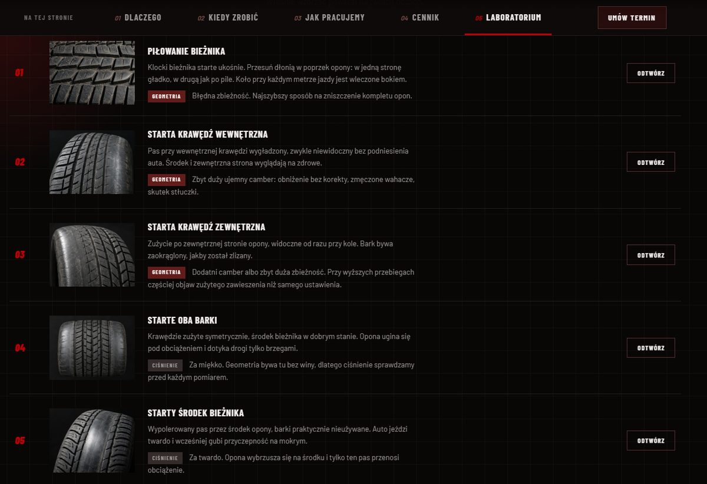

Dlaczego trzy obrazki to było za mało
Poprzednia wersja tej sekcji rysowała camber, zbieżność i caster jako trzy niezależne obrazki 2D. Każdy z osobna był poprawny i każdy mylił w tym samym miejscu: sugerował, że to trzy oddzielne ustawienia. A to jeden i ten sam kawałek zawieszenia obrócony w trzech płaszczyznach.
Widać to dopiero wtedy, gdy kołem da się poruszyć. Skręć kierownicą przy dużym casterze, a camber zmieni się sam – koło pochyli się w zakręt, choć nikt go nie regulował. Dołóż do tego zbieżność i masz zużycie opony, którego nie wyjaśni żaden z tych kątów osobno.
W nowym modelu ta zależność nie jest dorysowana. Koło jest obracane raz, jedną macierzą, a przyrost camberu przy skręcie i unoszenie nadwozia – to, dzięki czemu kierownica sama wraca do środka – wychodzą z tej samej matematyki co reszta.
Pięć suwaków i jeden odczyt
Do pokręcenia jest pięć rzeczy, każda z podaną normą producenta:
- Camber – pochylenie koła, norma ±0,5°.
- Zbieżność – suma na osi, norma ±0,6 mm.
- Caster – wyprzedzenie sworznia, norma 3–8°. Przy 4,5° model pokazuje 25 mm wyprzedzenia na jezdni.
- Skręt koła – 34° w każdą stronę. Tu dopiero widać, co caster naprawdę robi.
- Ciśnienie – od 1,4 do 3,4 bar. Nie jest kątem, a ściera oponę tak samo skutecznie.
Pod spodem liczy się odcisk opony na drodze, czyli rozkład nacisku na szerokości bieżnika, oraz pięć mierników: trwałość opony, stabilność na wprost, powrót kierownicy, reakcja na skręt i opór na kierownicy.
Nie ma tu żadnej biblioteki 3D ani modelu ściągniętego z sieci. Opona z bieżnikiem, felga, tarcza hamulcowa, zacisk, amortyzator ze sprężyną i wahacz są liczone w przeglądarce od zera – dlatego strona ładuje się tak samo szybko jak każda inna u nas.
44 000 czy 25 000 kilometrów
Najciekawszy odczyt to trwałość opony, bo przelicza kąty na pieniądze. Model rozkłada nacisk po szerokości bieżnika i normalizuje go do stałej sumy – ciężar auta się przecież nie zmienia, zmienia się tylko jego rozkład. Do tego dochodzi tarcie boczne od zbieżności. Przebieg liczony jest z najbardziej zużytego pasa, a nie ze średniej, bo oponę wymienia się wtedy, gdy jeden pas zejdzie do 1,6 mm, a nie gdy cała zetrze się równo.
Dla opony osobowej wychodzą liczby, które zgadzają się z tym, co widzimy na hali:
- ustawienie fabryczne – około 44 000 km,
- camber −2,4°, czyli typowe obniżone auto bez korekty – około 25 000 km,
- zbieżność +4,2 mm – około 24 000 km,
- ciśnienie 1,5 bar zamiast 2,2 – około 19 000 km.
To model poglądowy, nie wyrocznia, i nie zastąpi pomiaru na urządzeniu. Ale rząd wielkości jest uczciwy: komplet opon kosztuje dziś więcej niż kilka pomiarów geometrii.
Rozpoznaj problem po bieżniku
Druga połowa sekcji to pięć wzorców zużycia opony ze zdjęciami. Przy każdym jest przycisk „Odtwórz”, który ustawia suwaki symulatora tak, żeby ten właśnie wzorzec powstał na ekranie – obie połowy laboratorium są ze sobą połączone.

Najbardziej charakterystyczne jest piłowanie bieżnika: przesuń dłonią w poprzek opony, a w jedną stronę pójdzie gładko, w drugą jak po pile. Klocki są starte ukośnie, bo koło przy każdym metrze jazdy jest wleczone bokiem. To zbieżność i najszybszy znany nam sposób na zniszczenie kompletu opon.
Dwie ostatnie pozycje na liście – starte oba barki i starty środek bieżnika – nie mają z geometrią nic wspólnego. To ciśnienie. Dlatego sprawdzamy je przed każdym pomiarem: bez tego regulowalibyśmy kąty pod objaw, który ma zupełnie inną przyczynę.
Co jest w modelu przerysowane, a co prawdziwe
Uczciwie: kąty w bryle są powiększone. Prawdziwy camber to 1–3°, a zbieżność ułamek stopnia na koło – na modelu koła byłyby po prostu niewidzialne. Sprawdziliśmy to, bo pierwsza wersja nie miała przerysowania i koło wyglądało na idealnie proste przy każdym ustawieniu suwaków.
Mnożnik działa wyłącznie na obrót bryły. Każda liczba na ekranie – odczyt suwaka, wyprzedzenie sworznia w milimetrach, przebieg, werdykt pod wykresem – jest liczona z wartości rzeczywistych. Jest o tym zdanie pod suwakami i nie zamierzamy go stamtąd usuwać.
Ciekawostka: dlaczego sprężyna stoi nad wahaczem
Przy budowie modelu wyszła rzecz, która na rysunku 2D nigdy by się nie ujawniła. Oś, wokół której koło się skręca – oś sworznia – nie przechodzi przez środek koła. W aucie mija go od wewnątrz o kilkanaście centymetrów i trafia w jezdnię dokładnie w punkcie styku opony z asfaltem.
To tak zwany zerowy promień zataczania. Dzięki niemu koło przy skręcaniu obraca się w miejscu, zamiast zamiatać bokiem, a kierownica nie szarpie, gdy przy hamowaniu jedno koło trafi na mokre. I dokładnie stąd bierze się miejsce, w którym stoi kolumna McPhersona ze sprężyną: nad wahaczem, po wewnętrznej stronie, a nie nad środkiem koła. Z tego samego powodu wieżyczki zawieszenia siedzą w głębi komory silnika.
Pierwsza wersja modelu miała oś przechodzącą przez środek koła. Sprężyna wisiała wtedy nad oponą i wyglądało to źle, zanim ktokolwiek potrafił powiedzieć dlaczego.
Kiedy przyjechać na pomiar
Symulator pokazuje mechanizm, ale kątów w twoim aucie nie zmierzy. Przyjedź na geometrię 3D, jeśli:
- auto ściąga na prostej albo kierownica stoi krzywo przy jeździe na wprost,
- opony zużywają się nierówno – jedna krawędź, jeden pas, piłowanie,
- wymieniałeś elementy zawieszenia lub układu kierowniczego,
- trafiłeś mocno w krawężnik albo dziurę,
- auto zostało obniżone,
- albo po prostu przy sezonowej wymianie opon, raz w roku.
Pomiar kosztuje 150 zł i jest to ta sama stawka dla każdego samochodu. Regulacja zaczyna się od 250 zł za oś i zależy od konstrukcji zawieszenia – pełne stawki są w cenniku, a termin zarezerwujesz online albo telefonicznie. Pracujemy na alignerze 3D HANWAY HWAV28.
A jeśli chcesz najpierw zobaczyć, o co w tym wszystkim chodzi – model czeka na dole strony geometrii. Pokręć suwakami.